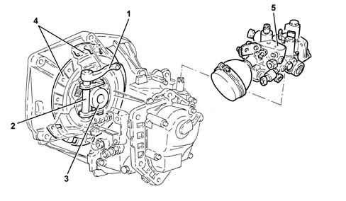

1820A CLUTCH RELEASE MECHANICAL CONTROL
- Path
- Descriptions > 18 CLUTCH UNIT > 1820 CLUTCH RELEASE CONTROLS > 1820A CLUTCH RELEASE MECHANICAL CONTROL
- Kind
- system description
- Applies to
- all engines; all production periods
- Interactive page
- https://sloeber94.github.io/elrnDB-aGt/en/#/125000324
Applies to: engines: 2.0 JTS; all production periods; only with equipment: Smart gearbox
INTRODUCTION
On vehicles fitted with a Selespeed gearbox the clutch pedal no longer exists and the clutch is operated automatically by the electro-hydraulic actuator which also controls the selection and engagement of the gears
Characteristic of working principle 2127A HYDRAULIC TRANSMISSION EXTERNAL LINKAGE
.
GENERAL VIEW
.

1 - Operating lever
2 - Fork
3 - Thrust sleeve
4 - Clutch mechanism
5 - Electro-hydraulic unit
CONSTRUCTION FEATURES
The clutch engagement and release device consists of linkage which implements the movement of the thrust bearing sleeve.
Operating
The engagement/release of the dry, single plate type clutch takes place through the action of the thrust bearing sleeve which, pressed against the pressure plate spring, discharges the pressure and allows the detachment of the clutch plate from the flywheel. When the linkage is released, the action of the pressure plate spring returns the clutch plate in contact with the flywheel.
The movement of the linkage is controlled, via a cylinder, by the hydraulic actuator fitted on the gearbox casing. The operation of the actuator is managed by the Selespeed control unit
Characteristic of working principle 2127A HYDRAULIC TRANSMISSION EXTERNAL LINKAGE
.
Applies to: engines: 1.8 T.SPARK, 3.2 V6, 1.9 JTD 16V; all production periods
See 18